· EEM202
EEM202 Devre Teorisi II: Üç Fazlı Devreler
EEM202 – Devre Teorisi II · 02.05.2014 · 16.10.2026
Bu yazı, Başkent Üniversitesi Elektrik-Elektronik Mühendisliği EEM202 Devre Teorisi II dersinde Yrd. Doç. Dr. Selda Güney'in hazırladığı Üç Fazlı Devreler sunumunun içeriğidir (Mayıs 2014). Slaytlardaki metinler, örnek soruları ve özetiyle birlikte aktarıldı; devre şemaları ve fazör diyagramları görsel olarak eklendi. 35 slaytlık orijinal PDF yazının sonunda indirilebilir.
İçerik
- Dengeli üç faz gerilimler
- Üç fazlı gerilim kaynakları
- Y-Y devre analizi
- Y-Δ devre analizi
- Dengeli üç fazlı devrelerde güç hesabı
- Üç fazlı devrelerde ortalama gücün ölçümü
Bir üç fazlı sistem üç parçadan oluşur: üç faz gerilim kaynağı, üç fazlı hat ve üç fazlı yük.
Dengeli üç faz gerilimler
Dengeli üç faz gerilimler eşit genlikli ve aralarında 120° faz farkı olan üç gerilimdir. Faz sırası iki türlüdür:
- abc pozitif sıra: V_b, V_a'dan 120° geride; V_c, V_a'dan 120° ileride
- acb negatif sıra: V_c, V_a'dan 120° geride; V_b, V_a'dan 120° ileride
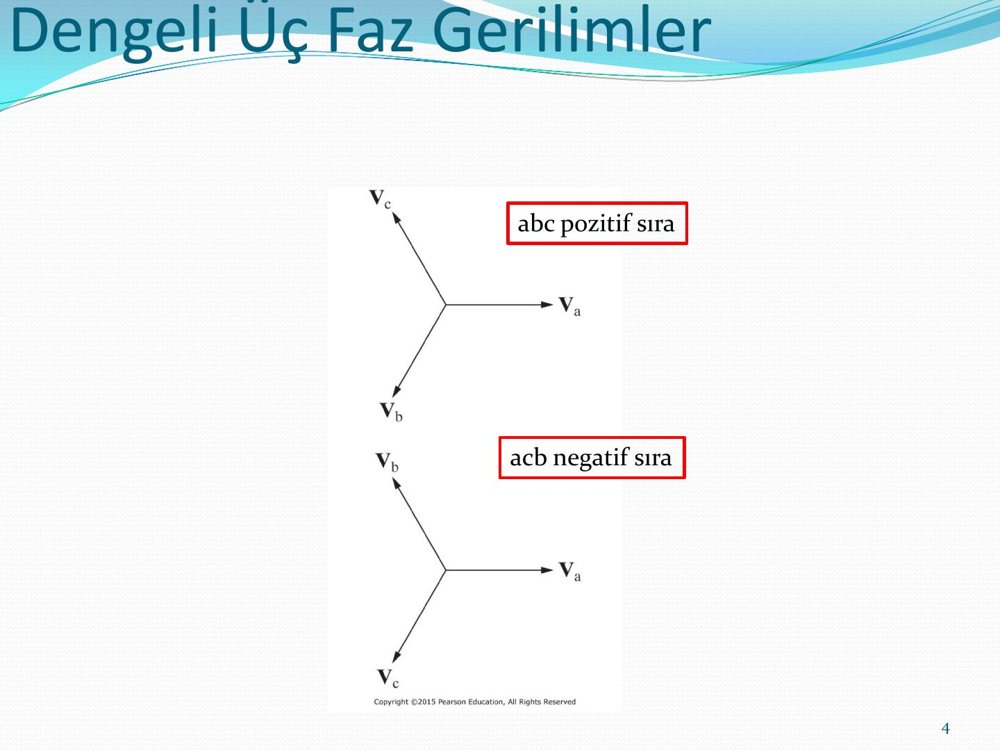
Üç fazlı gerilim kaynakları
Üç fazlı jeneratörde a, b ve c fazı sargılarının eksenleri statorda 120° aralıklarla yerleşmiştir. Kaynak yıldız (Y) ya da üçgen (delta, Δ) bağlı olabilir. Gerçek bir kaynakta her faz sargısının bir sarım direnci (R_w) ve bir sarım endüktif reaktansı (jX_w) vardır.
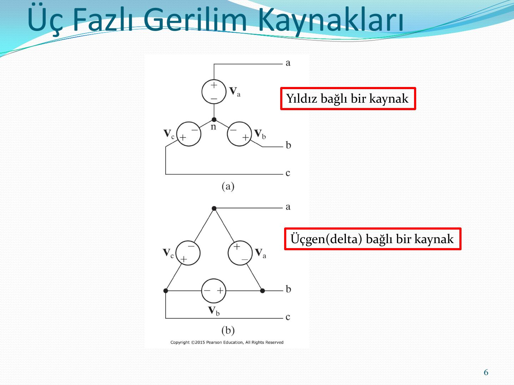
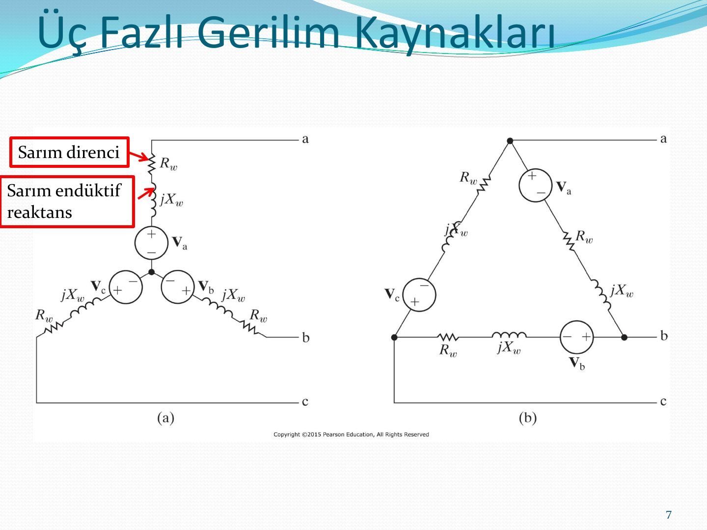
Üç fazlı kaynaklar Y veya Δ bağlı olabilir. Yük de Y veya Δ bağlı olabileceği için 4 farklı devre yapısı ortaya çıkar:
| Kaynak | Yük |
|---|---|
| Y | Y |
| Y | Δ |
| Δ | Y |
| Δ | Δ |
Y-Y devrenin analizi
Üç fazlı Y-Y sistemi; üç fazlı gerilim kaynağı (Z_ga, Z_gb, Z_gc iç empedanslarıyla), üç fazlı iletim hattı (Z_1a, Z_1b, Z_1c ve nötr hattı Z_0) ve üç fazlı yük empedansından (Z_A, Z_B, Z_C) oluşur.
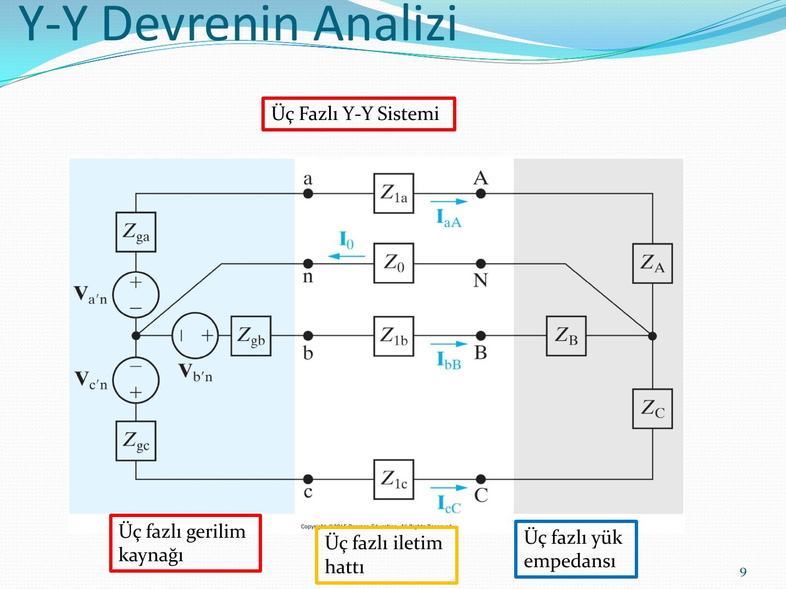
Dengeli sistemde analiz tek faz eşdeğer devresi ile yapılır: V_a'n kaynağı, Z_ga, Z_1a ve Z_A seri bağlıdır; bu devreden I_aA hat akımı bulunur.
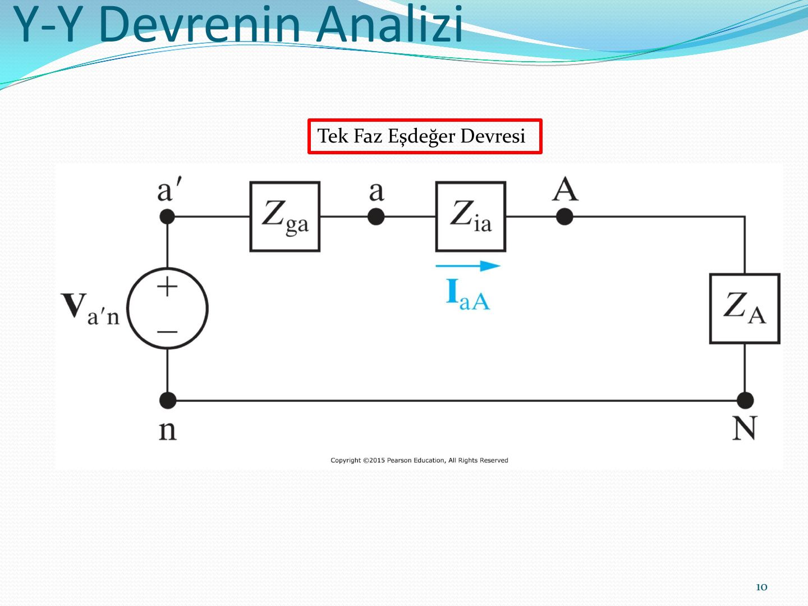
Hat-hat ve hat-nötr gerilimleri
Dengeli bir sistemde hat-hat gerilimleri (V_AB, V_BC, V_CA) ile hat-nötr gerilimleri (V_AN, V_BN, V_CN) arasındaki fazör diyagramı: hat gerilimleri, faz gerilimlerinden genlik olarak √3 kat büyüktür ve abc sırasında 30° ileride, acb sırasında 30° geridedir.
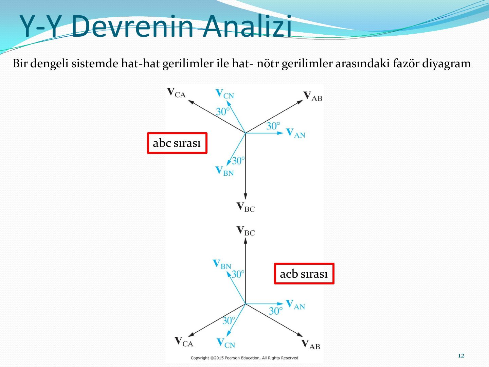
Örnek: Y-Y bağlı sistem
Bir dengeli üç fazlı ve Y-Y bağlı, pozitif faz sırası olan bir jeneratörün empedansı 0.2+j0.5 Ω/Φ ve iç gerilimi 120 V/Φ'dir. Jeneratör, üç fazlı Y-Y bağlı dengeli ve 39+j28 Ω/Φ empedanslı bir yükü beslemektedir. Jeneratörü yüke bağlayan hattın empedansı 0.8+j1.5 Ω/Φ'dir. Jeneratörün a fazı iç gerilimi referans fazörü olarak belirlenmiştir.
- Sistemin a fazının eşdeğer devresini oluşturunuz.
- I_aA, I_bB ve I_cC hat akımlarını hesaplayınız.
- Yükteki üç faz gerilimi V_AN, V_BN ve V_CN'yi hesaplayınız.
- Yük terminallerinde V_AB, V_BC ve V_CA hat gerilimlerini hesaplayınız.
- Jeneratör terminallerinde V_an, V_bn ve V_cn faz gerilimlerini hesaplayınız.
- Jeneratör terminallerinde V_ab, V_bc ve V_ca hat gerilimlerini hesaplayınız.
- a–f şıklarını negatif faz sırası için tekrarlayınız.
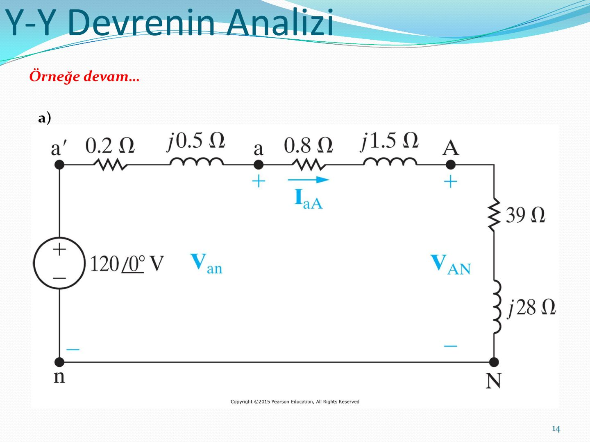
Örnek: Bir Y bağlı dengeli üç fazlı sistemde c fazının gerilimi 450∠−25° V'tur. Eğer faz sırası negatif ise V_AB değeri nedir?
Çalışma sorusu: Bir dengeli üç faz devrede A'dan N'ye gerilim 240∠−30° V'tur. Eğer faz sırası pozitif ise V_BC'nin değeri nedir? (Cevap: 415.69∠−120° V)
Y-Δ devrenin analizi
Δ bağlı yükte iki tür akım vardır: hattan geçen hat akımı (I_aA, I_bB, I_cC) ve yükün kollarından geçen faz akımı (I_AB, I_BC, I_CA).
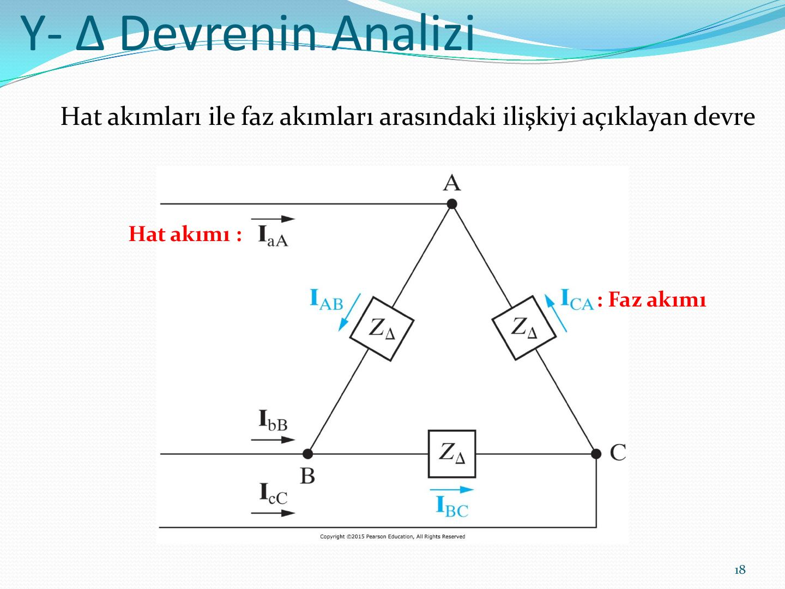
Dengeli Δ yükte hat akımları faz akımlarından √3 kat büyüktür; pozitif sırada 30° geride, negatif sırada 30° ileridedir.
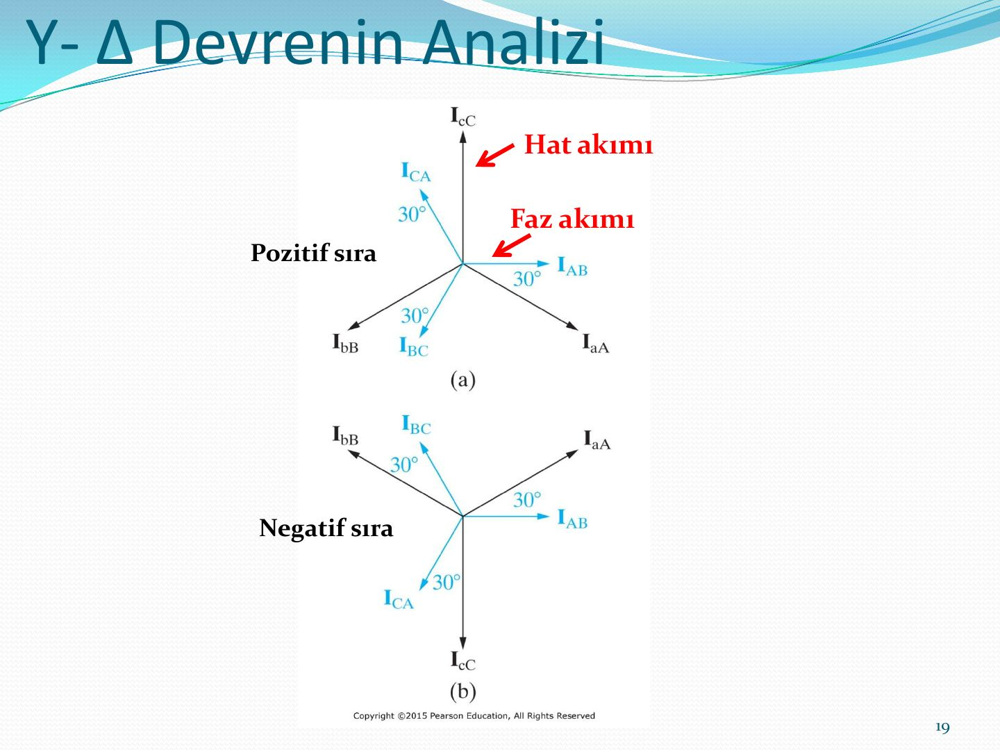
Örnek: Y-Δ bağlı sistem
Bir dengeli üç fazlı ve Y-Δ bağlı, pozitif faz sırası olan bir jeneratörün empedansı 0.2+j0.5 Ω/Φ ve iç gerilimi 120 V/Φ'dir. Jeneratör, üç fazlı Δ bağlı dengeli ve 118.5+j85.8 Ω/Φ empedanslı bir yükü beslemektedir. Jeneratörü yüke bağlayan hattın empedansı 0.3+j0.9 Ω/Φ'dir. Jeneratörün a fazı iç gerilimi referans fazörü olarak belirlenmiştir.
- Sistemin a fazının eşdeğer devresini oluşturunuz.
- I_aA, I_bB ve I_cC hat akımlarını hesaplayınız.
- Yük terminalindeki faz gerilimini hesaplayınız.
- Yükün faz akımlarını hesaplayınız.
- Kaynak terminalindeki hat gerilimlerini hesaplayınız.
Δ yük, eşdeğer Y yüke çevrildiğinde faz başına empedans (118.5+j85.8)/3 = 39.5+j28.6 Ω olur:
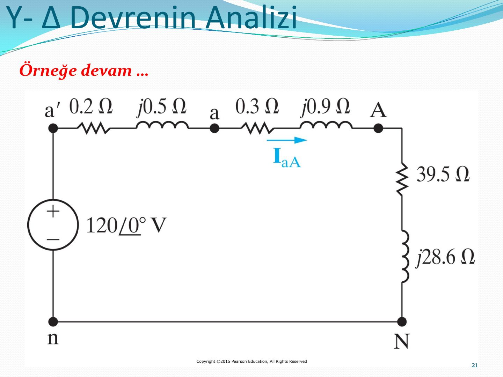
Örnek: Dengeli üç fazlı ve Δ bağlı bir yükte I_CA akımı 8∠−15° A'dir. Eğer faz sırası pozitif ise I_cC değeri nedir?
Örnek: Δ bağlı, dengeli bir üç faz yük, dengeli bir üç faz devreden beslenmektedir. b fazındaki akım değeri 12∠65° A'dir. Eğer faz sırası negatif ise I_AB'nin değeri nedir?
Problem çözme stratejisi
- Adım 1: Bilinmeyen fazörleri elde etmek için yıldız-yıldız bağlantısı kullanmak için üçgen bağlantılar yıldız bağlantıya dönüştürülmesi gerekir.
- Adım 2: Üç fazlı sistem dengeli olduğu için, sadece devrenin a fazının bilinmeyen fazörlerinin belirlenmesine gerek vardır.
- Adım 3: En sonunda hesaplanan fazörleri kullanarak orijinal sistemde bunlara karşılık gelen fazörleri bulunuz.
Not: Yıldız bağlantıda hat ve faz akımı aynı, üçgen bağlantıda hat ve faz gerilimi aynıdır.
Dengeli üç fazlı devrelerde güç hesaplamaları
Sunumda ortalama güç, dengeli Y yük (faz gerilimleri V_AN, V_BN, V_CN ve hat akımları) ve dengeli Δ yük (hat gerilimleri V_AB, V_BC, V_CA ve faz akımları I_AB, I_BC, I_CA) için ayrı ayrı ele alınır.
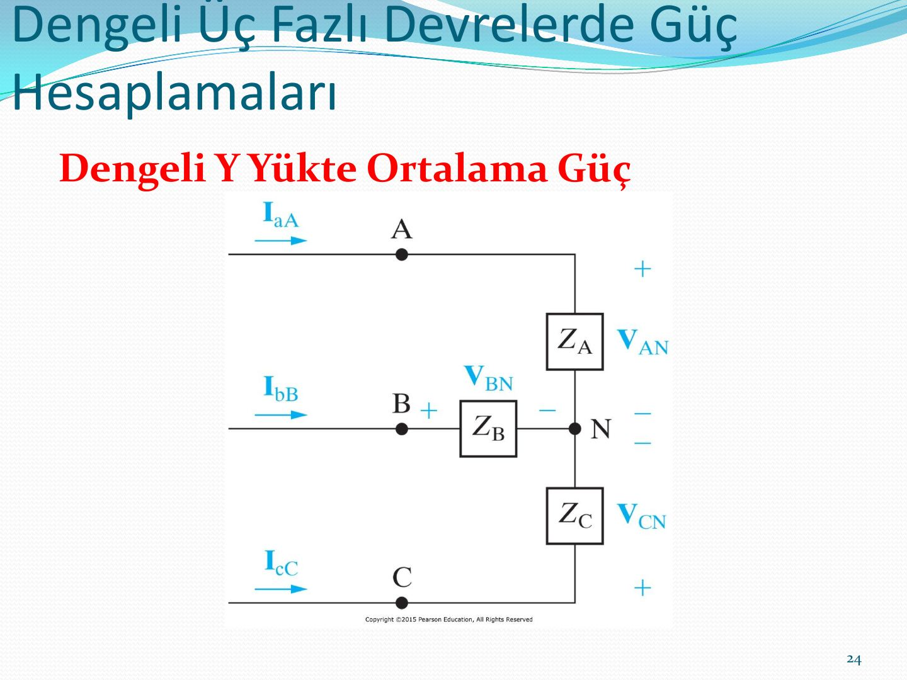
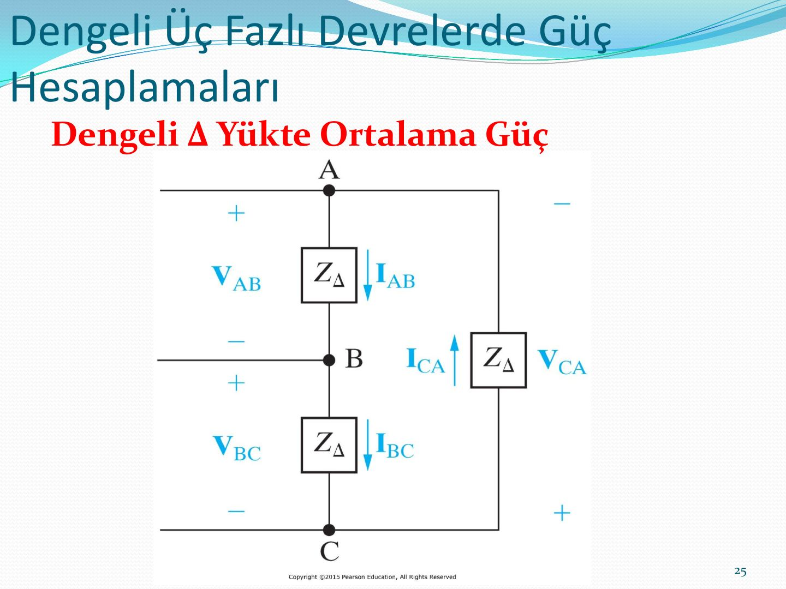
Örnek: Y-Y sistemde güç
Önceki Y-Y örneğindeki sistem (jeneratör 0.2+j0.5 Ω/Φ ve 120 V/Φ, hat 0.8+j1.5 Ω/Φ, yük 39+j28 Ω/Φ) için:
- Y bağlı yükün her fazı için aktarılan ortalama gücü hesaplayınız.
- Yüke aktarılan toplam ortalama gücü hesaplayınız.
- Hattaki toplam ortalama kayıp gücü hesaplayınız.
- Jeneratörde (kaynakta) kaybedilen toplam ortalama gücü hesaplayınız.
- Yük tarafından soğurulan toplam mıknatıslanma (VAr) miktarını bulunuz.
- Kaynağın aktardığı toplam kompleks gücü hesaplayınız.
Örnek: 480 kW'lık yük
Dengeli, üç fazlı bir yük, geri (gecikmeli) 0.8 güç çarpanında 480 kW güce gereksinim duymaktadır. Yük, empedansı 0.005+j0.025 Ω/ϕ olan bir hatla beslenmektedir. Yük terminalindeki hat gerilimi 600 V'tur.
- Sistemin tek faz eşdeğer devresini oluşturunuz.
- Hat akımının büyüklüğünü hesaplayınız.
- Hattın gönderen ucunda hat geriliminin büyüklüğünü hesaplayınız.
- Hattın gönderen ucundaki güç çarpanını hesaplayınız.
Tek faz eşdeğerinde yük faz başına 160 kW (0.8 geri) çeker ve yük faz gerilimi (600/√3)∠0° V alınır:
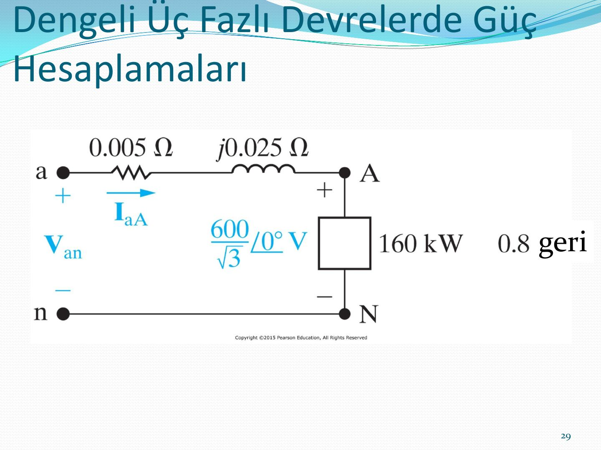
Üç fazlı devrelerde ortalama gücün ölçümü
Ortalama güç elektrodinanometre wattmetre ile ölçülür: wattmetrenin akım bobini terminalleri, gerilim bobini terminalleri ve watt ölçeğini gösteren göstergesi vardır.
İki wattmetre yöntemi
Dengeli üç fazlı bir devrede W₁ wattmetresinin akım bobini a hattına, W₂'ninki c hattına bağlanır; gerilim bobinleri bu hatlarla b hattı arasına bağlanır. Toplam ortalama güç, iki wattmetrenin okumasının toplamıdır.
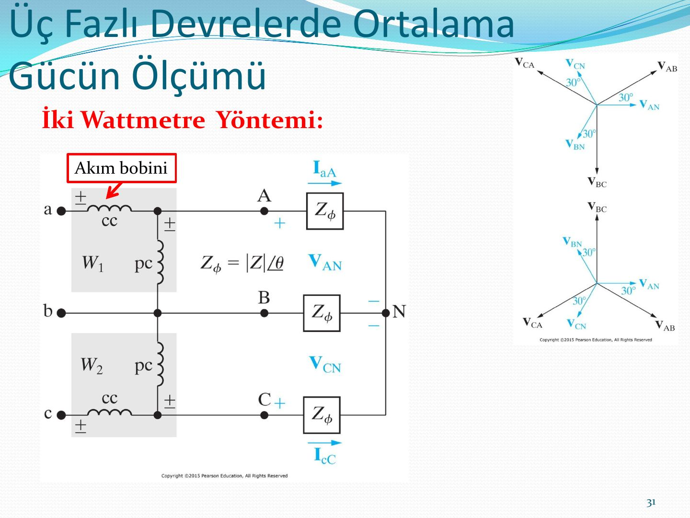
Örnek: Aşağıdaki şekilde yükteki faz gerilimi 120 V ve (a) Z_Φ = 8+j6 Ω, (b) Z_Φ = 8−j6 Ω, (c) Z_Φ = 5+j5√3 Ω, (d) Z_Φ = 10∠−75° Ω ise her bir wattmetrenin okuması gereken gücü hesaplayınız.
Özet
- Devre analizinde tüm Δ bağlantıları Y haline getirilmelidir.
- Tek faz eşdeğer devre, Y-Y yapının hat akımını ve bir fazın gerilimini bulmak için kullanılır.
- a fazı hat akımı ve faz gerilimi bulunduktan sonra b ve c fazı gerilim ve akımları 120° faz farkı dışında aynıdır.
- Hat gerilimlerinin kümesi, faz gerilimleri kümesinden genlik olarak √3 katı ve ±30° (pozitif/negatif sıra) faz farklıdır.
- Δ bağlı kaynak ve yük durumunda hat akımları kümesi faz akımları kümesinden √3 katı ve −/+30° farklıdır (pozitif/negatif sıra).
- Dengeli üç fazlı bir devrede toplam anlık güç sabittir ve faz başına ortalama gücün 1.5 katıdır.
- 3 fazda toplam aktif güç, reaktif güç ve kompleks güç, faz başına gücün 3 katı ya da hat gerilimi ve akımıyla çarpımın √3 katıdır.
- Bir wattmetre yüke aktarılan ortalama gücü, yükle seri bağlanan bir akım bobini ve yüke paralel bağlanan bir gerilim bobini bağlanarak ölçer.
- Dengeli üç fazlı bir devrede ortalama güç, iki farklı fazına bağlanan iki wattmetrenin okuması toplanarak ölçülebilir.
Not: Sunumun özetinde "toplam anlık güç faz başına ortalama gücün 1.5 katıdır" yazıyor; dengeli üç fazlı devrede toplam anlık güç, faz başına ortalama gücün 3 katına (toplam ortalama güce) eşittir. 1.5 katsayısı, Nilsson'daki p = 1.5·V_m·I_m·cos θ ifadesinde tepe değerlerle (V_m, I_m) yazılmış hâlinden geliyor olmalı.